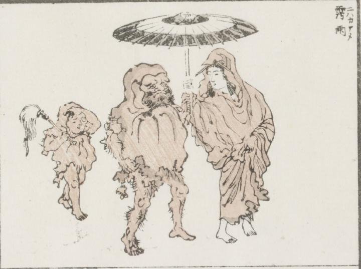

達磨；ダルマ

毛深い腕と脚を出した達磨が女に唐傘をさしてもらい、一緒に歩いている。後ろからは払子を持った小僧がついてきている。女も小僧も達磨と同じような僧衣に身を包んでいる。
著作者：牧墨僊／出典：親書誌：U426_nichibunken_0097：滑稽洒落狂画苑；コッケイシャレキョウガエン／日付：2007／資源識別子：U426_nichibunken_0097_0013_0000
Copyright (c)2010- International Research Center for Japanese Studies, Kyoto, Japan. All rights reserved.